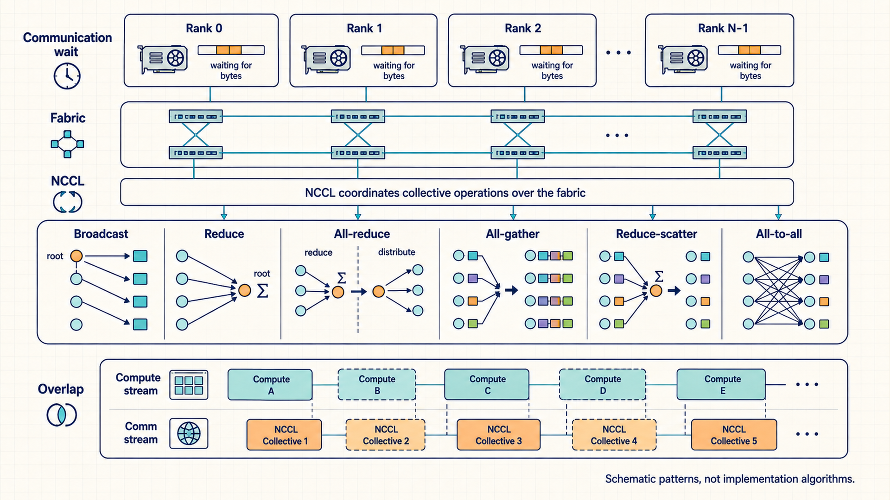

12 GPU Communication
Explain why GPU communication enters the critical path, how topology and collective algorithms shape its cost, and how to measure it.
Communication is where a single-GPU workload becomes a distributed system. The performance question is no longer only one kernel or one memory hierarchy; it is how tensors move and synchronize across processes, devices, nodes, and network fabrics.
The dependency begins with an object another worker process needs: a gradient bucket, parameter shard, activation, expert-routed token block, or serving state. Distributed runtimes assign each participating process an integer rank inside a process group. Payload size, frequency, destination, and readiness time determine whether startup latency, sustained bandwidth, topology distance, or waiting between ranks dominates the transfer.
Communication analysis starts with the bytes that must move and the physical path they cross. Point-to-point operations and collectives define the data relationship; schedules, backend libraries, and transports implement it. Overlap and profiling then show how much of the communication remains on the critical path.
- Process: An operating-system program instance. GPU jobs commonly use one process per GPU, although other mappings are possible.
- Rank: The integer identity of one process inside a distributed group.
- Process group: A named set of ranks that issue compatible communication operations through one selected backend.
When ranks depend on remote tensors, communication time includes waiting, software coordination, transfer over the available fabric, and synchronization before dependent work can continue.

The figure separates the framework process group, NVIDIA Collective Communications Library (NCCL), and physical fabric. Broadcast, reduce, all-reduce, all-gather, reduce-scatter, and all-to-all are drawn as different data relationships rather than as one repeated mesh. The overlap panel shows that communication can share time with independent compute only when dependencies and resources permit it.
12.1 Communication on the critical path
Single-GPU computation can often be overlapped, fused, compiled, or quantized. Communication is harder because it couples ranks. If one rank reaches a collective late, other ranks may wait. If a tensor-parallel layer needs partial results from peers every token, the interconnect becomes part of the critical path. Communication cost includes bandwidth, latency, topology, synchronization, and software overhead.
- Rank coupling: A distributed operation can force multiple processes to wait at the same logical point. Fast ranks do not finish earlier if they are blocked by slow ranks.
- Critical-path communication: Data movement that must complete before the next useful computation can start. Tensor-parallel collectives in a decode step are often critical-path work.
- Payload size: The number of bytes moved. Large gradients, activation tensors, parameter shards, and expert-routing buffers can dominate bandwidth.
- Startup latency: Fixed cost before useful bytes move. This is important for frequent small messages and per-layer collectives.
- Topology effect: The same collective can be fast or slow depending on whether it stays within NVLink/NVSwitch or crosses node boundaries through NICs and switches.
\[ \text{communication time} \approx \text{latency} + \frac{\text{bytes transferred}}{\text{effective bandwidth}} \tag{12.1}\]
Latency is the startup cost for the operation. Bytes transferred is the payload size. Effective bandwidth is lower than theoretical link bandwidth because algorithms, topology, contention, protocol overhead, and synchronization reduce usable throughput. For example, moving 1 GB over an effective 100 GB/s path with 20 microseconds of startup cost takes roughly 10.02 ms. The approximation omits overlap, algorithmic chunking, rank skew, network contention, and topology-dependent routing.
Message size changes which term dominates. A small collective can be slow because every rank pays startup and synchronization cost. A very large collective can use the fabric efficiently but spend most of its time moving bytes. Middle sizes are often the hardest to reason about because protocol choice, chunking, queueing, and overlap determine whether latency or bandwidth is exposed.
| Message-size range | Dominant cost | Typical examples | Useful change |
|---|---|---|---|
| Small and frequent | Startup latency, synchronization, launch overhead, rank skew | Per-layer tensor-parallel collectives, small control tensors, frequent expert routing metadata | Reduce message count, keep traffic in the fast local domain, combine operations when possible |
| Medium | Transition between latency and bandwidth; protocol and chunking choices matter | FSDP layer all-gathers, moderate gradient buckets, activation transfers | Tune bucket or shard sizes, improve overlap, and inspect backend algorithm choice |
| Large | Effective bandwidth and topology contention | Large gradient buckets, full-parameter shards, checkpoint or bulk cache movement | Use high-bandwidth paths, hierarchical collectives, compression, or overlap with independent compute |
Message size determines whether startup delay, rank skew, or sustained bandwidth is the first likely limit, but the effective rate still depends on the route between participants. The next question is how many device, switch, and node boundaries the payload crosses and where that path becomes shared.
12.2 Topology and communication distance
Scalable clusters use switched hierarchy: endpoints connect to local switches, and the fabric routes traffic through switch layers rather than requiring every device pair to have a dedicated cable.
Large clusters often use hierarchical switch designs such as leaf-spine topologies. Leaf switches connect servers in a rack or local group; spine switches connect leaf groups. This provides scalable bisection bandwidth, while every extra hop adds latency and every shared link can become congested.
A direct full mesh is the contrasting limit: every device connects to every other device. Port and cable demand grows rapidly with device count, which is why large systems use switched hierarchy instead.
Scale-up communication stays inside a tightly coupled accelerator domain with fast GPU-to-GPU paths. That domain is often one server, but rack-scale NVLink systems can join GPUs across more than one compute tray or node. Scale-out communication crosses the cluster network through network interface cards (NICs) and fabrics such as InfiniBand, RDMA over Converged Ethernet (RoCE), or Ethernet. Frequent latency-sensitive traffic such as tensor-parallel collectives should remain inside the fastest available scale-up domain whenever possible.
\[ \text{full-mesh links} = \frac{N(N - 1)}{2} \tag{12.2}\]
A full mesh among N endpoints needs N(N - 1)/2 undirected links, so direct wiring grows quadratically. Leaf-spine and related Clos fabrics replace those dedicated pairwise links with shared switch paths. A host-to-host path can be counted by switches or by physical links; state the convention before describing a path as a particular number of hops.
12.3 Communication cost model
Communication performance has four independent ingredients. A trace that says ‘all-reduce is slow’ is incomplete until it identifies which ingredient is limiting the operation.
- Latency: Startup and coordination time before the payload is effectively transferred. It dominates frequent small messages and token-path synchronization.
- Bandwidth: Sustained byte rate for large transfers. It dominates large gradients, parameter shards, activation transfers, and KV-cache movement.
- Topology: The physical and logical path between devices. GPU pairs connected through NVLink or NVSwitch do not behave like pairs crossing PCIe, NICs, or spine switches.
- Synchronization: The waiting behavior introduced when ranks must enter collective operations in a compatible order. Rank skew can make the collective look slow even when the network is healthy.
Optimizations target different ingredients. Larger buckets can improve bandwidth efficiency but may reduce overlap. Topology-aware rank placement can keep frequent collectives on fast links. Reducing message count can help latency-bound paths. Removing rank imbalance can shorten apparent collective time without changing the network.
Communication tuning must target the measured term: message count for latency, payload handling for bandwidth, placement for topology, or readiness skew for synchronization. The next question is which physical fabric and device-to-network path actually carries the bytes.
12.4 Physical communication paths
Communication fabrics should be described by scope. Some links move bytes inside a server. Some connect servers. Some are general-purpose and some are designed for high-performance GPU communication.
- PCIe: General host/device expansion bus connecting CPUs, GPUs, NICs, and other devices. It is ubiquitous but usually slower than NVLink for GPU peer traffic.
- NVLink: High-bandwidth GPU-to-GPU link available on supported systems and topologies. Pairwise bandwidth depends on the installed GPU model and the physical or switched connection between the selected GPUs.
- NVSwitch: A switch fabric that connects many NVLink-capable GPUs inside a server or platform. It improves intra-node connectivity, but the exact topology still matters.
- InfiniBand: High-performance cluster fabric commonly used for multi-node training and GPU collectives through RDMA-capable networking.
- RoCE: RDMA over Converged Ethernet. It can support high-performance cluster communication, but performance depends strongly on network configuration, congestion control, and lossless or near-lossless behavior.
- Ethernet: General-purpose network fabric. It is flexible and common, but standard Ethernet paths are often a poor fit for frequent latency-sensitive GPU collectives unless engineered specifically for that workload.
Fabric caveat
A fabric name is only the starting point for a performance estimate. Effective bandwidth depends on topology, routing, contention, message size, collective algorithm, and whether the software stack actually uses the intended path.
The critical distinction is local versus remote path. Frequent per-layer traffic is most viable inside a fast GPU fabric; cross-node traffic additionally traverses a GPU-to-NIC path, a network interface, switches, and the destination path. Product names and peak bandwidth figures are generation-specific, so verify the installed topology and achieved transfer rate rather than copying a nominal number.
12.5 Point-to-point and collective communication
Distributed programs communicate either through explicit pairwise transfers or through group operations. The choice changes both the code structure and the synchronization behavior.
- Point-to-point communication: One rank sends data to another rank. It is common in pipeline stages, custom protocols, explicit activation transfers, and control paths where the communication pattern is irregular.
- Collective communication: A group of ranks participates in one operation with a defined group-level result, such as all-reduce, all-gather, or all-to-all.
- Ordering requirement: Ranks must call compatible collectives in compatible order. Mismatched ordering can hang or corrupt the distributed program.
- Engineering trade-off: Point-to-point communication can be flexible but harder to reason about globally. Collectives are structured and optimized, but they create synchronization points.
The semantics define who participates and which ranks receive results; they do not prescribe a central coordinator or physical traffic path. The next section names the common group transformations before their ring, tree, or hierarchical implementations are considered.
12.6 Collective primitives
A collective operation is a group communication primitive used by strategies such as DDP, FSDP, tensor parallelism, and expert parallelism to move their required tensors.
- Broadcast: One source rank sends the same tensor to every other rank. It copies a source value and is commonly used to initialize or synchronize parameters.
- Reduce: Many ranks contribute tensors that are combined on one destination rank. The destination receives the aggregate; custom aggregation paths use this ownership pattern.
- All-reduce: All ranks contribute tensors, the tensors are reduced, and every rank receives the reduced result. DDP uses it for gradient synchronization and pays both reduction and redistribution traffic.
- All-gather: Each rank starts with a shard, and all ranks receive the full collection of shards. Materializing sharded parameters or activations creates a full temporary result on every participant.
- Reduce-scatter: Ranks reduce tensors and each rank receives one shard of the reduced result. FSDP and sharded optimizer paths use its combined reduction and partitioning behavior.
- All-to-all: Every rank sends a different slice to every other rank and receives different slices back. Expert-parallel token routing uses this latency- and topology-sensitive exchange.
Expert-parallel all-to-all cost comes from routing token representations, not from the expert MLP arithmetic alone. A rough payload estimate is the number of routed token copies times hidden dimension times bytes per element, split across destination ranks. Top-k routing multiplies token traffic because one token may be sent to more than one expert.
Read the payload estimate through these five cost objects:
- Routed tokens: Tokens assigned from each rank to remote expert ranks. Router imbalance creates tail latency when one expert or rank receives too much work.
- Top-k multiplier: The number of experts selected per token. Top-2 routing can roughly double routed activation traffic before outputs are combined.
- Hidden dimension and dtype: The bytes carried by each token representation. FP16 or BF16 activations move twice the raw bytes of 8-bit activations before metadata or padding.
- Topology distance: Whether routed tokens stay inside a node, rack, or cross-node fabric. All-to-all is sensitive to simultaneous peer paths and aggregate fabric behavior.
- Combine path: The return path that restores original token order after expert execution. Dispatch cost is only half the story when the combine collective is also critical.
\[ \text{ring all-reduce bytes sent per rank} \approx \frac{2(N - 1)}{N} \times \text{tensor}_{\text{bytes}} \tag{12.3}\]
Here N is the number of ranks and tensor_bytes is the size of the tensor being reduced. Under the standard ring model, each rank sends approximately this many payload bytes across reduce-scatter and all-gather and receives the same amount. With 8 ranks and a 1 GiB tensor, the per-rank sent payload is 1.75 GiB; a send-plus-receive accounting convention would report 3.5 GiB. State the convention before converting traffic to bandwidth. The approximation omits latency per chunk, topology, protocol overhead, and overlap with backward computation.
Worked calculation - ring all-reduce traffic
Inputs: Use N = 8 ranks and tensor_bytes = 1 GiB for one all-reduce payload.
Substitution: 2 x (8 - 1) / 8 x 1 GiB = 1.75 GiB sent by each rank across reduce-scatter and all-gather; each rank also receives about 1.75 GiB.
Meaning: The estimate uses a per-rank bytes-sent convention and describes payload traffic, not elapsed time. Link latency, chunking, topology, protocol overhead, rank skew, and overlap determine the measured duration.
Next measurement: Compare the estimate with NCCL traces and the actual interconnect path before changing bucket size or rank placement.
A ring all-reduce commonly implements a reduce-scatter phase followed by an all-gather phase over chunked tensors. Merely drawing ranks in a circle does not demonstrate those phases; verify the actual schedule or trace before using a ring-topology picture as algorithm evidence.
Collective names specify before-and-after tensor ownership. Their measured cost still depends on the backend’s chosen schedule, chunking, topology, rank readiness, and overlap.
12.7 Collective algorithms
A collective algorithm is the communication schedule used to implement a collective primitive. The same all-reduce request can therefore run as a ring, a tree, or a hierarchy depending on message size, topology, backend heuristics, and runtime settings.
- Ring collective: Streams chunks around ranks and can use bandwidth well for large tensors, especially when each link can stay busy.
- Tree collective: Aggregates through a branching structure and can reduce latency for smaller messages or topologies where a ring would expose too many sequential hops.
- Hierarchical collective: Communicates inside a fast scale-up domain first, then across slower domains, then inside the destination scale-up domain. This matches systems where NVLink/NVSwitch and InfiniBand/RoCE have different costs.
- Topology awareness: Chooses or tunes the schedule using the actual device, switch, and network layout rather than treating every rank pair as equally expensive.
A hierarchical schedule performs local aggregation inside a fast GPU island, exchanges reduced data across the slower inter-node path, and then distributes the result locally. A tree schedule is a different branching reduction and distribution algorithm; a two-node hierarchy should not be labeled as a tree unless the branching parent-child structure is actually shown.
12.8 Framework and communication backends
After the payload, topology, collective semantics, and possible schedules are defined, the software stack can be assigned concrete responsibilities. A distributed strategy decides what must communicate, a framework API expresses the operation for a group of ranks, a backend implements it, and the selected transport carries the bytes over the installed hardware.
torch.distributed: The PyTorch API for initializing process groups, assigning rank identities, and issuing point-to-point or collective operations.- Backend: The implementation selected by a process group to execute its communication operations, such as NCCL for many CUDA tensor collectives or Gloo for common CPU/control paths.
- Strategy boundary: DDP, FSDP, tensor parallelism, pipeline parallelism, and expert parallelism decide which objects and operations are required; the API and backend execute those requests.
Backends do not all occupy one interchangeable role. NCCL is commonly selected for CUDA tensor collectives on NVIDIA GPUs. Gloo is commonly used for CPU tensors and control-oriented paths. Message Passing Interface (MPI) implementations provide broader HPC process and communication facilities. Unified Communication X (UCX) exposes transport abstractions used by several distributed-runtime stacks. Compatibility depends on the framework build, tensor location, operation, platform, and deployment configuration.
Definition - NCCL
NVIDIA Collective Communications Library is the common GPU collective library for NVIDIA distributed training and inference. It implements collective operations and chooses algorithms over available paths such as PCIe, NVLink, NVSwitch, and network interfaces.
NCCL does not decide the training strategy. It implements communication operations requested by frameworks or distributed libraries. For example, DDP may need all-reduce for gradients, FSDP may need all-gather and reduce-scatter for sharded state, and expert parallelism may need all-to-all routing. NCCL tries to execute those operations efficiently on the hardware topology.
- Process group: A set of ranks that participate in communication. PyTorch creates process groups and calls backend collectives through them.
- Collective algorithm: The pattern NCCL uses to move chunks, such as ring, tree, or hierarchical variants. The selected algorithm depends on message size, rank count, and topology.
- Transport: The path used underneath the collective, such as peer-to-peer GPU links, PCIe, shared memory, sockets, InfiniBand, or RoCE depending on the system.
- NCCL logs:
NCCL_DEBUG=INFOand related settings expose backend decisions. Logs are diagnostic evidence, not proof of achieved performance by themselves.
Communication controls are read by processes at initialization. CUDA_VISIBLE_DEVICES changes visible devices and local numbering; NCCL_SOCKET_IFNAME selects socket interfaces; NCCL_IB_DISABLE and NCCL_P2P_DISABLE are diagnostic path toggles. These controls can test routing hypotheses, but they do not choose the model’s sharding strategy or prove that the enabled path reaches peak throughput.
A useful debugging question is: did the framework request the intended collective, did NCCL select the intended transport, and did the measured trace show that the collective was on the critical path?
This ownership chain prevents a common diagnostic error: changing a framework strategy when the wrong network interface was selected, or changing a transport variable when the strategy itself communicates too often for the topology.
12.9 Communication and computation overlap
Communication/computation overlap means scheduling data movement so it occurs while independent useful computation is still running. It reduces step time only when the communication is no longer on the critical path.
- DDP overlap: Buckets gradients and launches all-reduce as soon as a bucket is ready during backward propagation.
- FSDP overlap: Can prefetch or all-gather parameters near the layer that needs them.
- Pipeline overlap: Runs micro-batches across stages so some stages compute while others transfer activations or gradients.
- Tensor-parallel limits: Layer-internal collectives often have little independent work after them, so they are harder to hide than DDP gradient buckets.
- Serving limits: Decode has a short per-token critical path, so communication in tensor-parallel serving can be visible even when training overlap looks good.
Overlap works only when there is independent computation available while communication runs. If the next layer or token needs the communicated result immediately, the communication remains exposed.
The common mistake is assuming overlap has hidden communication because kernels and collectives appear adjacent in a trace. The test is critical path time: if shortening the collective would still shorten the step, communication is not fully hidden.
Overlap is established by aligned compute and communication lanes plus a shorter critical path, not by adjacent colored blocks. If removing or shortening the communication would still shorten the step, an exposed communication tail remains.
12.10 Profiling communication
Communication profiling asks where time is lost when ranks exchange tensors. The evidence can come from several layers: the framework call such as dist.all_reduce, the NCCL backend that chooses a collective algorithm and transport, the GPU timeline that shows copy or collective kernels, the network fabric that carries bytes between nodes, and the rank synchronization behavior that makes fast ranks wait for slow ranks.
When communication is suspected, a dedicated distributed harness separates the collective from model computation. The template below warms the operation, measures repeated all-reduces on every rank, reports the slowest rank’s mean time, and converts the ring traffic estimate into an effective per-rank payload rate.
Example: NCCL collective timing probe. This distributed probe shows the objects involved in a simple all-reduce: process group, rank-assigned GPU, tensor payload, synchronization, and elapsed time. Launch it with torchrun across the intended number of GPUs.
Code example: NCCL collective timing probe
# What this code shows:
# - dist.init_process_group('nccl') creates the communication group.
# - payload supplies a CUDA device pointer to NCCL. Logs and traces must still confirm whether the
# physical path uses peer access, GPUDirect RDMA, shared memory, sockets, or a staged fallback.
# - Warmup keeps initialization outside the measured samples; the barrier aligns ranks before the
# measurement window.
# - Reducing the per-rank means with MAX reports the slowest participant, which is the relevant
# collective completion time.
# - The reported GB/s uses the ring traffic approximation and is not raw physical-link bandwidth.
# - NCCL_DEBUG=INFO can reveal selected transport and topology decisions.
# - Compare this elapsed time with Nsight Systems traces before concluding that communication is
# fully exposed.
#
# Launch example:
# NCCL_DEBUG=INFO torchrun --nproc_per_node=4 nccl_probe.py
import os
import torch
import torch.distributed as dist
dist.init_process_group("nccl")
try:
local_rank = int(os.environ["LOCAL_RANK"])
torch.cuda.set_device(local_rank)
device = torch.device("cuda", local_rank)
payload = torch.ones(256 * 1024 * 1024, device=device, dtype=torch.float16)
for _ in range(5):
dist.all_reduce(payload, op=dist.ReduceOp.SUM)
torch.cuda.synchronize()
dist.barrier()
samples_ms = []
for _ in range(20):
start = torch.cuda.Event(enable_timing=True)
stop = torch.cuda.Event(enable_timing=True)
start.record()
dist.all_reduce(payload, op=dist.ReduceOp.SUM)
stop.record()
stop.synchronize()
samples_ms.append(start.elapsed_time(stop))
mean_ms = torch.tensor(sum(samples_ms) / len(samples_ms), device=device)
dist.all_reduce(mean_ms, op=dist.ReduceOp.MAX)
world = dist.get_world_size()
ring_bytes = 2 * (world - 1) / world * payload.numel() * payload.element_size()
effective_gb_s = ring_bytes / (mean_ms.item() / 1000) / 1e9
if dist.get_rank() == 0:
print(f"slowest_rank_mean_ms={mean_ms.item():.3f}")
print(f"estimated_ring_payload_GBps={effective_gb_s:.1f}")
finally:
dist.destroy_process_group()The probe isolates one payload and one collective, so it can compare rank placement or transport configurations without model noise. NCCL_DEBUG=INFO can reveal selected interfaces and topology decisions, but only the timed samples and system trace show achieved behavior. Compare the result with a topology-aware theoretical estimate and an Nsight Systems trace before assigning the gap to the fabric.
PyTorch Profiler can show collective operators in the framework trace. Nsight Systems shows whether collectives overlap kernels or sit on the critical path. NCCL logs help diagnose backend selection, network interface choice, peer-to-peer paths, and failures.
12.11 Topology-aware design
Topology-aware distributed design means choosing a parallelism and serving architecture that matches how often tensors must move. A topology defines which transfers are cheap enough to place on the critical path.
The central rule is communication frequency versus distance. The more often a tensor must move, the closer the communicating devices should be. Per-token and per-layer communication should stay inside the fastest scale-up domain whenever possible. Per-step communication can sometimes cross nodes when overlap and bandwidth are good. Background movement can use slower tiers if it does not block the hot path.
- Scale-up domain: A tightly connected GPU group such as one server, pod, or NVLink/NVSwitch island. It is the preferred place for frequent tensor-parallel or decode-critical communication.
- Scale-out domain: Multiple nodes connected through NICs and switches. It provides capacity and aggregate throughput, but it usually adds latency, routing, and contention.
- GPU/NIC affinity: The locality relationship between a GPU and the network card used for cross-node traffic. Poor affinity can add PCIe hops, CPU-socket crossings, or host staging.
- Bisection bandwidth: The aggregate bandwidth available when traffic crosses a cut through the topology. It matters when many ranks communicate at once; a fast single link is insufficient for concurrent traffic.
- Oversubscription: A topology condition where the upstream fabric has less bandwidth than the sum of attached endpoints. It is common in cost-controlled networks and can hurt concurrent collectives.
- Placement policy: The scheduler or launch decision that maps ranks, serving groups, workers, or replicas onto physical GPUs and nodes.
After those topology objects are named, communication frequency can be matched to distance:
- Per-token communication: Decode-time tensor parallelism, expert routing, logits exchange, or KV movement. It is the most latency-sensitive traffic and should usually stay inside a fast scale-up domain.
- Per-layer communication: Tensor-parallel all-reduce, all-gather, or reduce-scatter inside transformer layers. It normally needs NVLink, NVSwitch, or an equivalent low-latency scale-up fabric.
- Per-step communication: DDP gradient all-reduce and many Fully Sharded Data Parallel (FSDP) or Zero Redundancy Optimizer (ZeRO) communication phases. It can sometimes cross nodes because backward computation may overlap communication.
- Per-request communication: Request routing, prefill/decode handoff, or pipeline activation movement. The acceptable distance depends on TTFT, TPOT, and tail-latency targets.
- Background communication: Checkpointing, model loading, cache spill/fill, and slow-tier movement. It can use slower paths when the work is amortized and kept off the hot path.
The table applies those communication frequencies to complete placement and scheduling patterns. Each row states the intended topology fit and the failure that appears when the mapping is wrong.
| Design pattern | Communication pattern | Topology fit | Failure mode |
|---|---|---|---|
| Topology-aware placement | Ranks with frequent exchange are placed near each other | Use NVLink/NVSwitch or same rack for hot pairs | Scheduler spreads hot ranks across slow paths |
| Hierarchical collective | Communicate inside one scale-up domain, then across slower domains, then inside the destination scale-up domain | Matches intra-node GPU fabric plus cross-node network | Treats all rank pairs as equally cheap |
| Bucket and overlap | Group tensors and launch communication while compute continues | Works when independent compute remains | Small buckets add overhead; large buckets expose a tail |
| Shard-and-gather | Store state sharded; materialize only near layer use | Works when gather/reduce paths are fast enough | Memory saved locally becomes network-bound |
| Scale-up first, scale-out second | Keep per-token or per-layer traffic inside one node/group | Serving replicas or groups scale across nodes | Cross-node tensor parallelism hurts TPOT |
| Sticky KV-cache placement | Route active requests near the GPUs holding their KV cache | Serving groups with stable cache locality | Load balancing moves cache-heavy requests too freely |
| Rail or NIC-aware grouping | Ranks that leave a node use the intended NIC path | Systems with multiple NICs or network rails | Traffic concentrates on one weak interface |
| Topology-aware replica placement | Replicas are spread to avoid shared-fabric hot spots | Serving fleets and multi-tenant clusters | All replicas contend on the same leaf or spine |
Design checklist
Object: Is the moving object a gradient, parameter shard, activation, KV block, expert token, logits vector, request, or checkpoint chunk?
Frequency: Does it move per token, per layer, per step, per request, or in the background?
Critical path: Would shortening this transfer reduce TTFT, TPOT, step time, or tail latency?
Overlap: Is there independent compute available while the transfer runs?
Locality: Does the traffic stay inside the intended scale-up domain, or does it cross NICs and switches?
Contention: What happens when multiple jobs, collectives, or serving replicas share the same fabric?
Metric: Is success judged by throughput, TTFT, TPOT, tail latency, utilization, memory capacity, or cost?
This pattern view prevents a common distributed-system error: choosing a parallelism strategy because it fits memory, then discovering that its communication frequency does not fit the topology. Memory capacity and communication distance have to be designed together.
12.12 Communication design checks
Reliable distributed diagnosis names the framework call, backend library, physical path, and critical-path wait. Apply the following checks before changing a communication strategy.
- Distinguish NVLink, a physical GPU interconnect, from NCCL, a collective communication library.
- Treat
torch.distributedas the framework API that calls a backend; inspect the backend and selected transport separately. - Keep tensor-parallel groups on the fastest available links when each layer requires frequent communication.
- Place ranks with topology awareness so a local collective does not cross an unnecessary slow path.
- Synchronize collective timing and separate warmup from steady-state measurement.
With the communication primitives and physical paths defined, Chapter 13 can compare distributed training and inference strategies by the tensors they exchange, the frequency of those exchanges, and the topology that carries them.